Contents
1. Tranh 1 nhóm bạn đang ngồi ăn trong quán 5
3. Màn hình smart TV, điều khiển đang chọn kênh 7
4. Người đàn ông nằm trên sofa xem TV 8
5. 3 người nằm trên cỏ đọc sách 8
8. Nhóm người trong phòng họp 11
9. 1 gia đình trang trí cây thông Noel 12
10. 1 gia đình đi chơi trò chơi ở công viên giải trí 12
11. Cô gái ngồi trên du thuyền, ngắm cảnh biển 12
12. 1 gia đình đang cổ vũ 1 chương trình thể thao trên tivi 12
13. 1 người đàn ông mặc vest đứng ở tàu 12
15. Tranh 1 cô giáo và 4 đứa trẻ đánh bột mì làm bánh. 13
17. Tranh lũ trẻ lên xe bus 14
18. Tranh 3 người đàn ông nhảy 15
19. Một gia đình chơi ở công viên 16
21. 5 người đàn ông leo núi 18
22. Gia đình trong phòng khách 18
23. Em bé đang cưỡi ngựa cùng mẹ 19
25. Bố con nấu ăn trong bếp 20
28. Nhiều người đi bộ qua đường 22
29. Người phụ nữ ngồi trên xe bus 22
33. Những người phụ nữ shopping 25
1. Tranh 1 người nhìn máy bay + 1 người đứng đợi tàu 27
2. Tranh 2 bố con cho ngựa ăn + trẻ con chơi với rắn 28
5. Gia đình mua sắm trong siêu thị + người phụ nữ bán dâu tây ở chợ 31
6. Tranh du lịch thành phố + du lịch vùng núi 32
7. Tranh nhiều người trên xe bus + 1 người mở cửa vào ô tô 32
9. Tranh 1 người viết thư + 1 cô đánh máy email 33
10. Tranh gia đình đang cổ vũ bóng đá ở sân vận động + tranh nhóm người xem hòa nhạc 33
11. Tranh vài người leo núi + tranh ở biển 0 người, có vài cây dừa xung quanh 34
12. 1 người đàn ông tập gym/ 2 người phụ nữ leo núi 34
13. Tranh 2 công nhân đeo đèn trên đầu và tranh đầu bếp cầm đĩa thức ăn vui vẻ 35
14. Tranh thành phố ven biển + ngôi nhà trên núi 35
15. Âm nhạc hiện đại + âm nhạc cổ điển 36
16. Cửa hàng tiện lợi + siêu thị 37
18. 2 kiểu nhà ở: apartment + small house 39
19. Xem phim ở rạp + xem phim ở nhà 39
20. Nghe nhạc bằng headphone ở nhà + nghe ca sĩ hát ở ngoài 40
21. Người đàn ông ngồi đọc sách + Cậu bé chơi điện tử 41
23. Người đàn ông với đàn khỉ + Ngư dân bắt cá heo 42
24. Gia đình chơi cờ + Một người chơi video games 42
25. Cưỡi lạc đà + Cưỡi xe ngựa 43
26. Ăn ở nhà + Ăn ngoài hàng 44
27. Người khuyết tật chơi bóng rổ + Người già chơi tennis 44
28. Đọc sách truyền thống + đọc sách online 45
32. Chơi piano ở nhà + Chơi guitar trên sân khấu 46
33. Ăn vỉa hè + ăn nhà hàng 47
34. Làm việc ở phòng thí nghiệm + văn phòng 48
37. Xây cầu ở thành thị + Cánh đồng nông thôn 51
39. Bãi biển đông người + 2 cô gái cạnh sông 52
40. Học ở thư viện + ở quán cà phê 53
41. Gia đình ngồi sân cỏ + cô gái ở ban công 54
Đề 1: Kể về một lần teamwork (tương tự đề kể lần thuyết trình) 55
Đề 2: Kể về một thử thách của bạn 56
Đề 3: Kể về một lần bận rộn 56
Đề 4: Kể về một thành tựu của bạn (tương đương kể lần đạt giải thưởng) 57
Đề 5: Kể về một lần thăm 1 thành phố mới 58
Đề 6. Kể lần gặp 1 người bạn mới 59
Đề 7. Kể lần được tặng quà (tương đương kể lần nhận good news) 60
Đề 8. Kể lần học 1 kỹ năng mới 61
Đề 10. Kể về một lần ai đó yêu cầu dừng làm việc gì 62
Đề 12: Kể lần thăm 1 tòa nhà cổ + Kể 1 lần đi xem 1 tác phẩm nghệ thuật 63
Đề 14: Kể lần tham gia lễ hội âm nhạc 64
Đề 15: Kể 1 lần xem 1 trận đấu thể thao 64
Đề 16: Kể lần tham gia hoạt động cho trẻ em 65
Đề 17: Trang phục yêu thích (đề dị 1) 65
Đề 18: Thói quen ngủ (đề dị 2) 66
Đề 20: Kể lần tham gia khóa học tiếng anh 66
Đề 21: Kể lần giúp đỡ ai đó. 67
Đề 22: Kể 1 lần bạn vội vàng 68
Đề 23: Kể lần đi công viên giải trí + kể lần tham gia trò chơi cảm giác mạnh 69
Đề 24: Kể lần đọc 1 cuốn sách hay 70
Đề 26: Kể lần có nhiều sự lựa chọn 71
Đề 27: Kể lần nhận câu hỏi khó (tương đương kể lần được hỏi thông tin) 72
Đề 28: Kể lần phải dành ra nhiều nỗ lực 72
Đề 29: Kể lần mất nhiều thời gian để lên kế hoạch cho 1 việc 73
Đề 30: Kể lần muốn mua gì nhưng không được 74
Đề 31. Kể lần mua món đồ đắt tiền 75
Đề 32: Kể lần có 1 chuyến đi dài 76
Đề 33: Kể lần đi thăm tòa nhà cao tầng 77
Đề 34. Kể lần gặp thời tiết xấu 78
Đề 35: Kể lần bạn đi nghỉ - holiday 79
Đề 36: Kể lần nhận tin tốt (tương đương kể lần nhận email) 80
Đề 37: Kể một lần làm việc mình không muốn làm 81
Đề 38. Kể lần ai đó thiếu lịch sự với bạn 82
Đề 39. Kể lần bạn cười thành tiếng 83
Đề 40. Kể lần bạn tiết kiệm tiền mua gì đó (tương đương lần mua quà đắt tiền) 84
Đề 41. Kể nơi bạn đã từng đi du lịch 85
Đề 42. Kể lần muốn thứ gì nhưng không có được 86
Đề 43. Kể lần vào rừng chơi 87
Tả tranh và trả lời 2 câu hỏi liên quan.
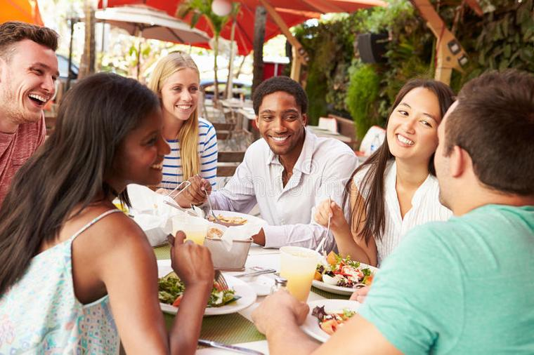
Describe the picture
In the photo, I can see a group of friends sitting at the same table and eating in a restaurant. It's a very beautiful place with lots of trees around. There are 2 men and 2 women, they are wearing different colored shirts. They are enjoying their food while smiling and talking to each other, it looks like they are talking about something very funny. Looking at the background of the picture, I can tell that this is a fast food restaurant or a cake restaurant. They all look happy and full of energy.
Why do people like eating out with friends?
People are keen on eating out because it is one of the great ways to spend the time and it is fun and enjoyable activity. Besides, people like to share food with family and friends. Actually, eating out has become one of the most popular ways of recreation. It is a time to be out, see people and meet people. You can enjoy the delicious food that you usually do not cook at home while smiling and talking with your friends about some fun stories. I think that’s why people are into eating out.
Please talk about the last time you ate with friends?
The last time I ate with my friends was last night. Me and my group of friends went to a Chinese restaurant in the city center. The purpose we went to eat was to celebrate a friend of mine who passed his English test that morning. We enjoyed our meal a lot while smiling and talking about the beautiful memories of our life. The restaurant had a homely atmosphere and soft music that made me comfortable and helped me let my hair down after a working day.
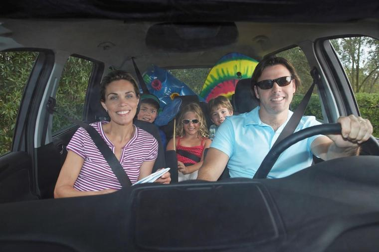
Describe this picture
As can be seen in this picture, there is a family in a car. There is a mother, a father, their 3 kids and they are all fastening their seat belts. The father in a red shirt is driving. Sitting next to him is the mother, she is smiling happily. Their children are sitting in the back seat. I think they are going to take a trip to somewhere far away from their home during holidays or weekends. By going on road trips, they can spend time together, which strengthens the family relationships. Everyone look happy and I can tell they’re having a great family road trip together
Tell me the last time you traveled in a car?
The last time I traveled by car was yesterday. I drove to HaLong city with my family, which is a coastal city in the north of Vietnam. It took us about 2 hours to get there and we had so many opportunities to experience the picturesque scenery along our way. We even pulled over several times to enjoy the gorgeous scenery and take some beautiful photos. I think that was one of the best experiences that I have ever had.
How can people overcome the time of a long journey?
There are so many ways to help people pass the time on a long journey and create more memorable travel experiences. I think the most common one is that we can listen to our favorite music or read a book to kill time. If you don’t have the concentration to read books, then you should watch a film or TV series instead. Playing a fun game is also one of the best ways to make the time pass faster. In addition, carrying some snacks is also extremely popular, in case they feel hungry.
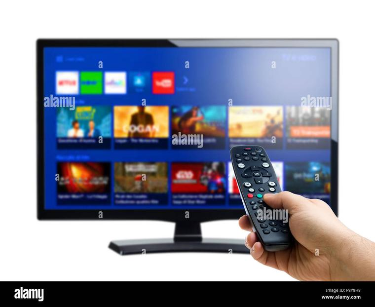
Describe this picture
In this picture, I see a right hand holding a black remote facing the TV screen with many channels on the screen. There are many different channels on the screen such as music, sports, boxing, animation... I guess he/she is clicking and choosing the show he/she wants to watch. I can't guess if it's a woman or a man choosing a channel because I can only see the hand with the TV remote. Maybe he or she is in the living room because there is a white table and the desk shelf under the TV. It seems to be a smart TV because there are play, pause,stop, next, previous.
How often do you watch films or programmes at home? Why?
Well, I’m keen on watching TV because it is one of my favorite activities. I often watch films or programs at home in my spare time like the evening on the weekend with my family. We are into watching comedy TV programs or action movies because we want to enjoy the fun of family weekends. Sometimes I watch a football game with my father on the weekend. Watching movies not only helps me let my hair down after a hard-working day but also makes me happy and expands my horizons. I think watching TV is very interesting.
Which is better for learning, watching video or reading? Why?
Personally, I prefer watching videos to reading books. The graphics in the videos attract me and help me understand better. Besides, watching videos is extremely suitable for introductions to difficult topics, especially something unfamiliar. Furthermore, watching a video takes me less time than reading a book with the same content. Moreover, learning through a video can make us feel more comfortable and relaxed than reading. It not only expands my horizons but also helps me let my hair down after a hard working day. But if you combine these two methods you can learn the best.
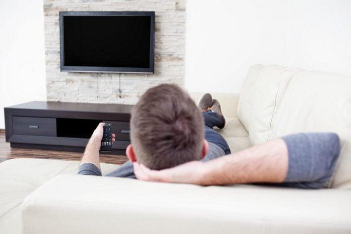
Describe this picture
Well, in the picture, I can see a man watching TV. He is lying on the sofa. It must have been his relaxing time after a hard day. He is wearing his nightwear and I can see the comfort on his face. Perhaps he is watching his favorite TV programs. I guess it may be a soccer match, a fashion show, a music concert or something like that. It is so great for us to have leisure time after long working hours, right? So don’t forget to take your time to refresh your mind and prepare well for a new day.
Do you often watch TV?
Why is free time important?
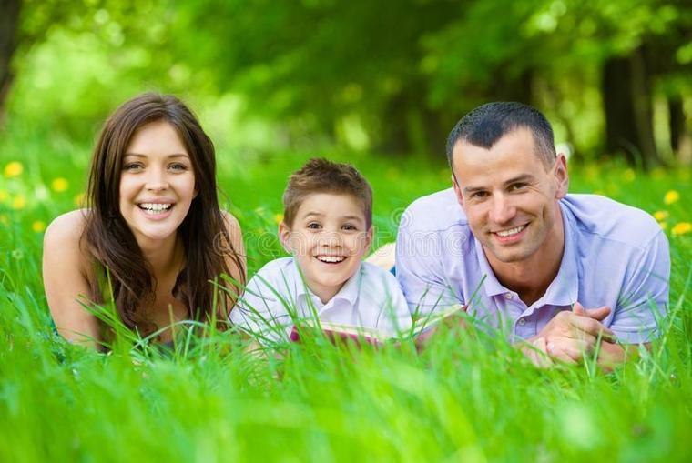
Describe:
In this picture, I can see three people. I guess they are members of a family including father, mom and daughter. They are lying down on grass and reading a book. The girl is about 6-8 years old. They seem to be very happy to read the book together. Based on the background, maybe the picture is taken in a park. It seems that they are enjoying their free time.
Bạn thường đọc gì?
Some kinds of books that I would prefer to read are romance novels, history books or science fiction books. During the holiday, science fiction is my favorite choice, such as exploring time travel, space travel, and future scientific and technological advances. I can sit and read these books for hours without getting bored, it not only expands my horizons and improves my mental health but also helps me to let my hair down after a hard working day.
Tại sao đọc sách lại quan trọng đối với trẻ em?
I suppose that reading brings many benefits to children, especially for children’s thinking and perception. Reading allows them to develop a better imagination and get more life information. When you start reading aloud to your child, you are basically giving them background information about the world, which helps them make sense of what they see, hear and read. In addition, I think reading is also good for children’s health because it helps them limit their exposure to electronic devices.
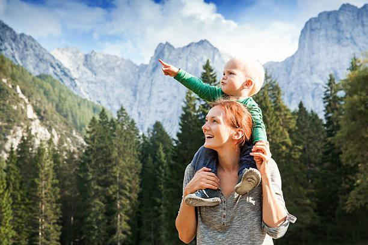
Tả tranh mẹ cõng con
Looking at this picture, I see a mother and her child and the mother is carrying her child. They are looking very cheerful and full of energy. I guess that they are at the zoo or the park. Looking at the background, I can see a lot of trees and mountains. I see that the weather is very beautiful and lovely.
When was the last time you visited a new place?
The last time I explored a new place was about a month ago. I visited a charming little town in the countryside. The main square was surrounded by quaint cafes and historic buildings, creating a picturesque setting. I spent the day wandering through cobblestone streets, discovering local shops, and indulging in regional cuisine. The highlight was stumbling upon a hidden garden with vibrant flowers and a peaceful atmosphere. It was a refreshing experience, and I enjoyed the blend of history, culture, and nature in that new locale. Exploring unfamiliar places always brings a sense of adventure and discovery.
Why do people like to go to new places?
People are drawn to new places for various reasons. The desire for adventure and exploration motivates individuals to discover different cultures, landscapes, and cuisines. Traveling to unfamiliar destinations provides a break from routine, fostering personal growth and creating lasting memories. It satisfies the innate curiosity to learn and experience new things. Whether it's the thrill of discovery, relaxation in a novel environment, or the chance to broaden one's perspectives, the allure of new places lies in the diverse and enriching experiences they offer.
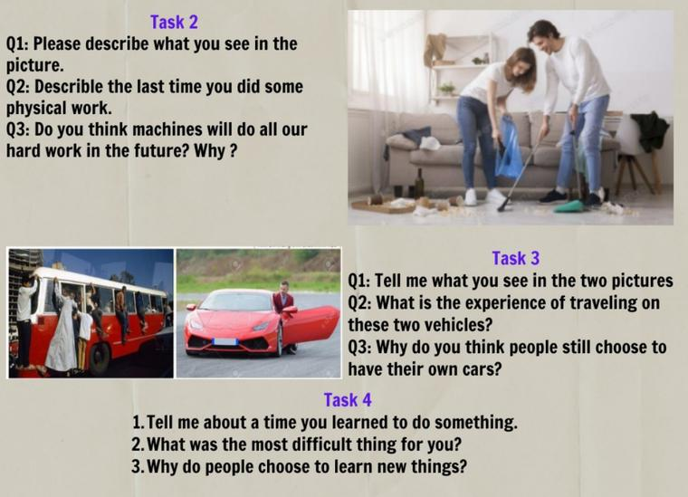
In this photo, I see a man and a woman in an apartment or a living room, where there are many storage boxes surrounding them. The couple is doing the housework. The man in white T-shirt and blue jeans is sweeping the floor. He seems to be happy to do that. The woman is collecting some bottles of beer and putting them in a plastic bag. She looks so tired and uncomfortable.
In the background of the picture, there’s a gray sofa and a white bookshelf. Their room looks quite messy and untidy, I guess they had a party at their house the day before and now they have to clean up the house and rearrange everything.
The last time I did physical work was about a month ago. It's Tet. Everyone has a custom of cleaning the house before the Tet festival and so does my family. I had to sweep and clean 2 floors and besides, my mother and I had to clean and rearrange the cupboard, bookshelves and 2 wardrobes. The last days of the year are always the busiest, when everything had to be completed and the house also needed decorating. Although those are very tiring and heavy tasks, I found that they helped to strengthen the bonds between family members because we could create many unforgettable times with each other.
In my opinion, I don't think that machines can replace humans. Although many labor-saving devices have proved to be very useful in helping us save time and effort when doing housework such as washing the dishes, doing the laundry or vacuuming, I still believe that only humans can do non-standardized tasks. Robots are good at repetitive tasks but lousy at dealing with varied and unique situations. Machines make human skills more important. So, rather than undermining humans, we are much better off thinking hard about how to up skill ourselves and learn how to work.
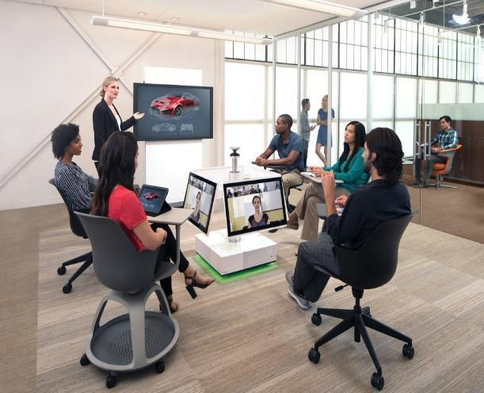
Describe
Looking at the picture, I can see 4 people, including 2 men and 2 women discussing with each other in an office. There is a man in a gray vest, standing and pointing at a white board. The walls are all painted white. On the table, there are many cups of tea and coffee and some laptops as well. They all seem to be very concentrated, energetic and enthusiastic about their job. I guess this is a big and important project
Tell us about the time you give a presentation. How did you feel?
The last time I spoke in public was when I had to make a presentation about the benefits of nature. It was a project which was held by my club with the aim of raising public awareness about the environment and the measures to protect our nature. At first I was extremely nervous and scared. However I made sure that I knew what I wanted to say and I became more confident. I felt happy that I overcame my fear.
Why are people scared of public speaking?
There are many reasons why people become afraid when having to speak in public. First of all, public speaking is an art that requires lots of courage, confidence and will-power. Most people lack this skill because of its challenging type of nature. Besides, people are afraid of public speaking because the look of a lot of people may make them feel shy and unable to express their feelings and their thoughts.
Tả tranh
Bạn có thích trang trí nhà cửa ko?
Tại sao các gia đình hay trang trí nhà cửa vào các dịp đặc biệt?
Tả tranh
Bạn thích đến địa điểm như thế không?
Tại sao trẻ con bị thu hút bởi công viên giải trí ?
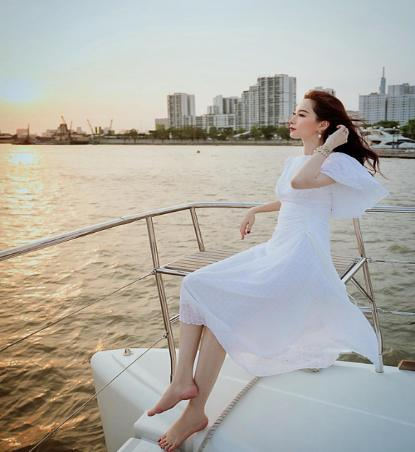
Describe the picture
Tell us the last time you went to the sea?
Why do some people dislike going to the sea?
Tả tranh
Bạn có hay xem các chương trình thể thao không?
Môn thể thao nào phổ biến nhất ở nước bạn?
Tranh: người đàn ông mặc vest đứng trên tàu, tay dùng điện thoại, kẹp nách tờ báo.
Tả tranh
Kể lần gần nhất bạn sử dụng phương tiện công cộng
Làm thế nào để tăng số lượng người sử dụng phương tiện công cộng?
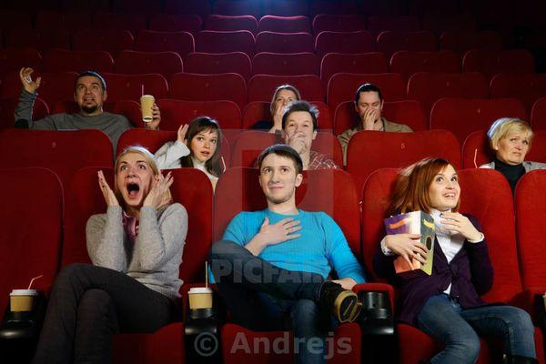
Describe the picture
Tell me about a time you laughed a lot
Do you think people from different countries laugh at different things?
Describe the picture
How do people learn to cook in your culture
Why is it important for people to learn how to cook for themselves?
Describe the picture
In your country, do parents care about their children?
Why do parents care about their children?
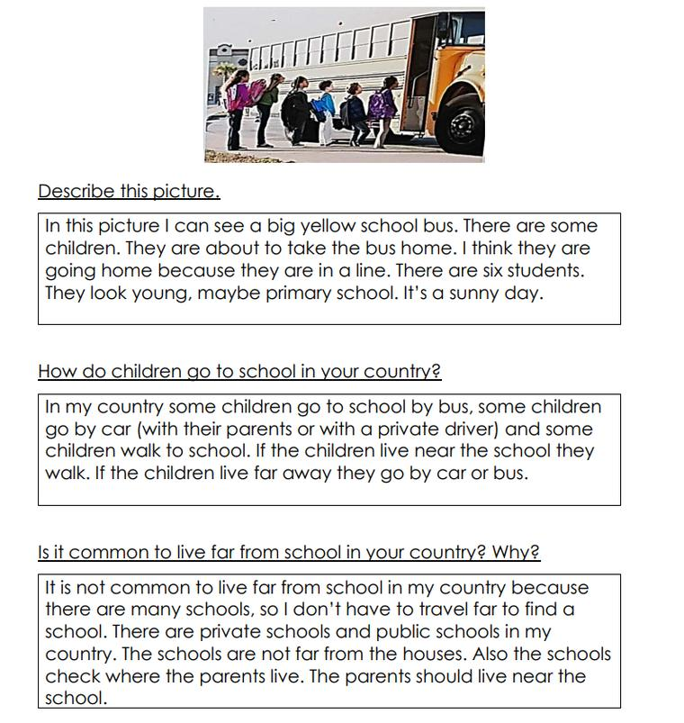
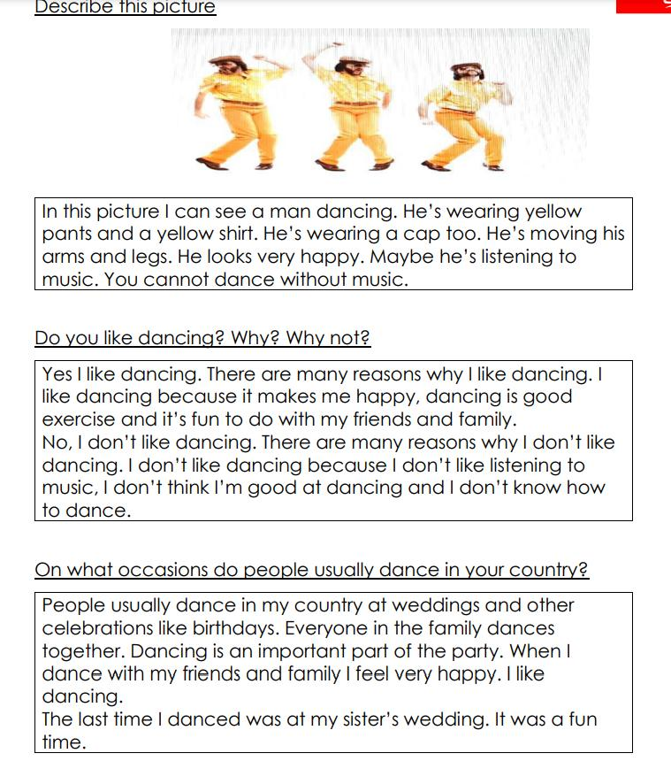
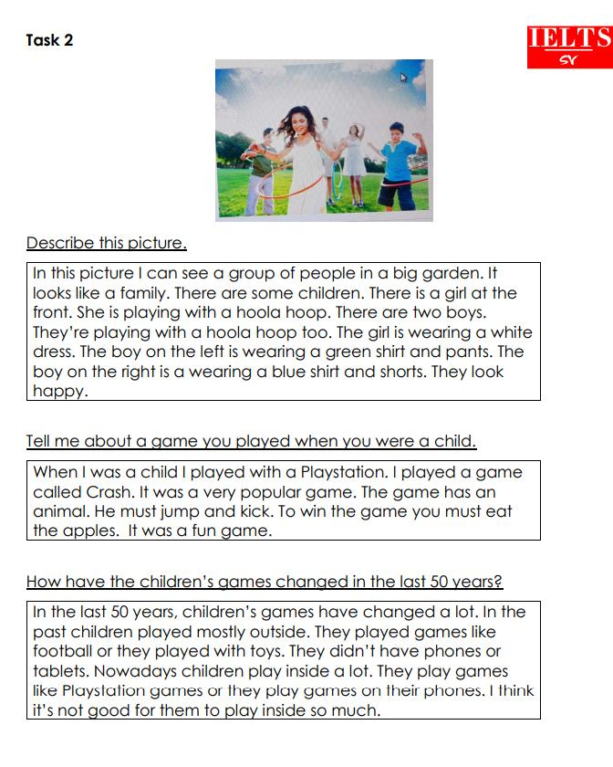
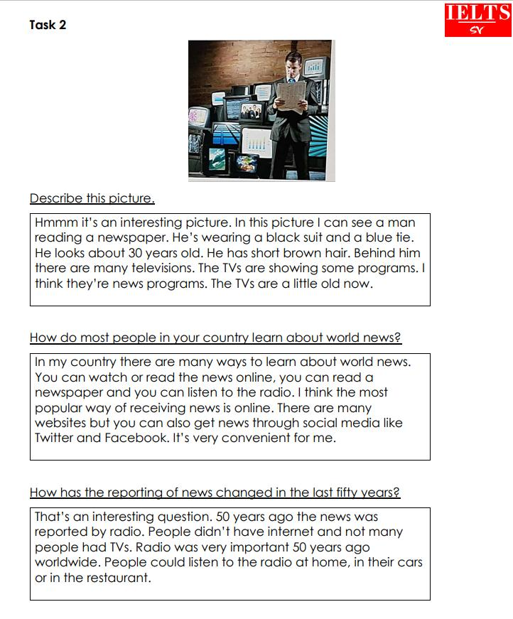
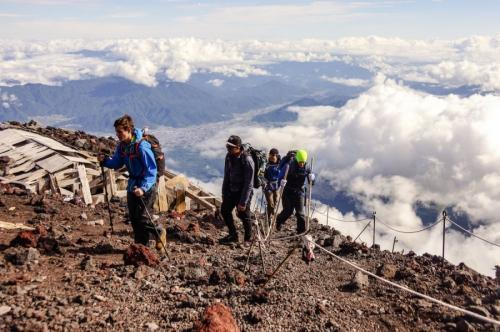
Describe the picture
Do you like to climb mountains?
Do you think outdoor activities are important?
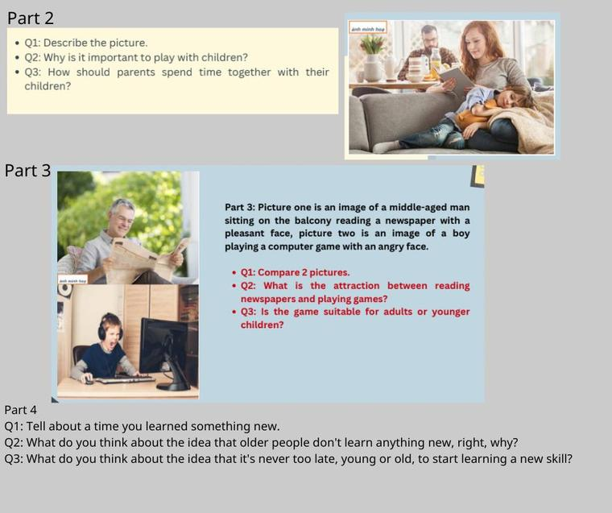
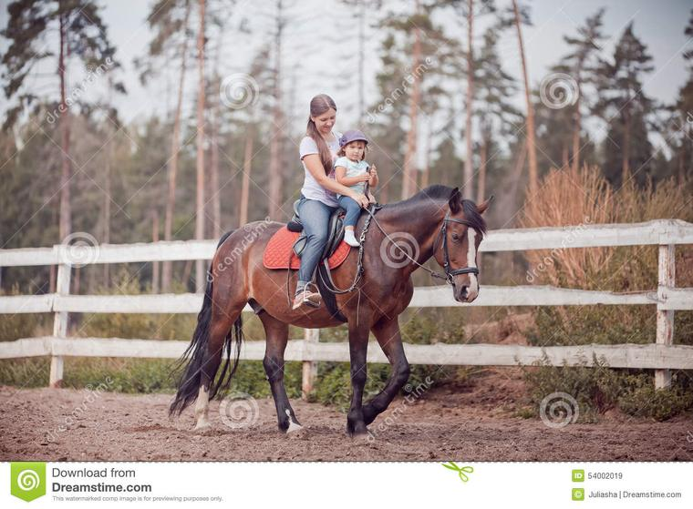
Describe the picture
Tell me about an animal that you like?
How important are animals in our lives?
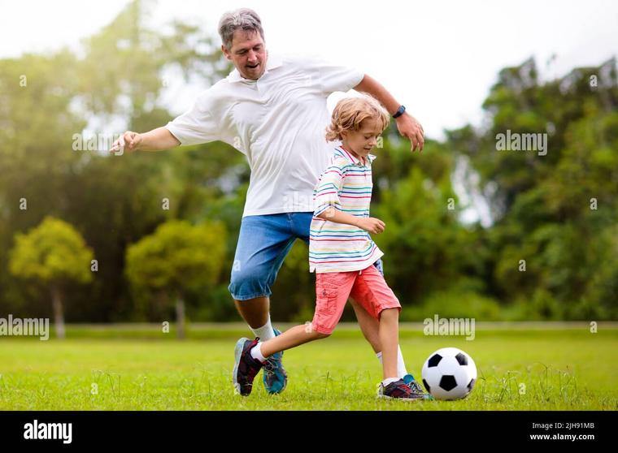
Describe the picture
In this picture, I see a father and his son. They are wearing different colored casual clothes. I could tell they were having fun playing soccer on a grass field. It looks like they are very on cloud nine and full of energy. Looking at the background, I can see a lot of trees. In this picture, I can tell that the weather is very lovely and gorgeous.
What are the benefits of outdoor activities?
Outdoor activities have many advantages. They keep you physically healthy by promoting exercise and fresh air, which helps your heart and lungs. They also boost mental well-being, reducing stress and lifting your mood. Being in nature creates a sense of connection to the environment and encourages social interactions. Lastly, outdoor activities help develop skills like teamwork and problem-solving. In summary, they're good for your physical health, mental happiness, social connections, and skill-building.
Why do many people like outdoor activities?
Many people enjoy outdoor activities for various reasons. Firstly, being outdoors allows them to connect with nature and enjoy the fresh air. Outdoor activities like hiking or biking provide opportunities for exercise, promoting physical health. Additionally, outdoor settings often reduce stress and improve overall well-being. The natural environment offers a break from daily routines, fostering a sense of relaxation. Moreover, outdoor activities can be a social experience, providing opportunities to spend time with friends and family. Overall, people appreciate outdoor activities for their physical, mental, and social benefits.
Describe the picture
In your country, do parents care about their children?
Why do parents care about their children?
Describe the picture
Tell me the time you shopped in a local store?
Nowadays, why do people like shopping online?
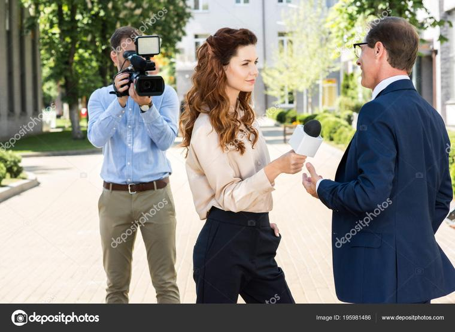
Describe the picture
Do you prefer reading newspapers or watching news?
Why do people need to watch the news?
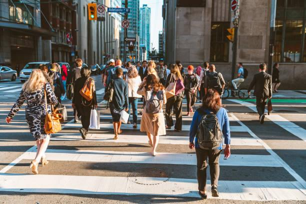
Describe the picture
What do you think about living in a crowded city?
Why do many people hate crowded places?
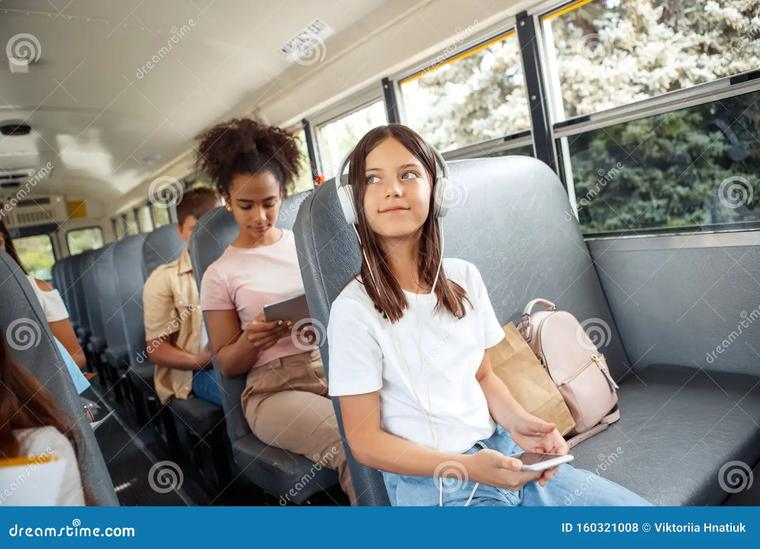
Describe the picture
When was the last time you went on vacation with someone else?
What are the benefits of hanging out with other people?
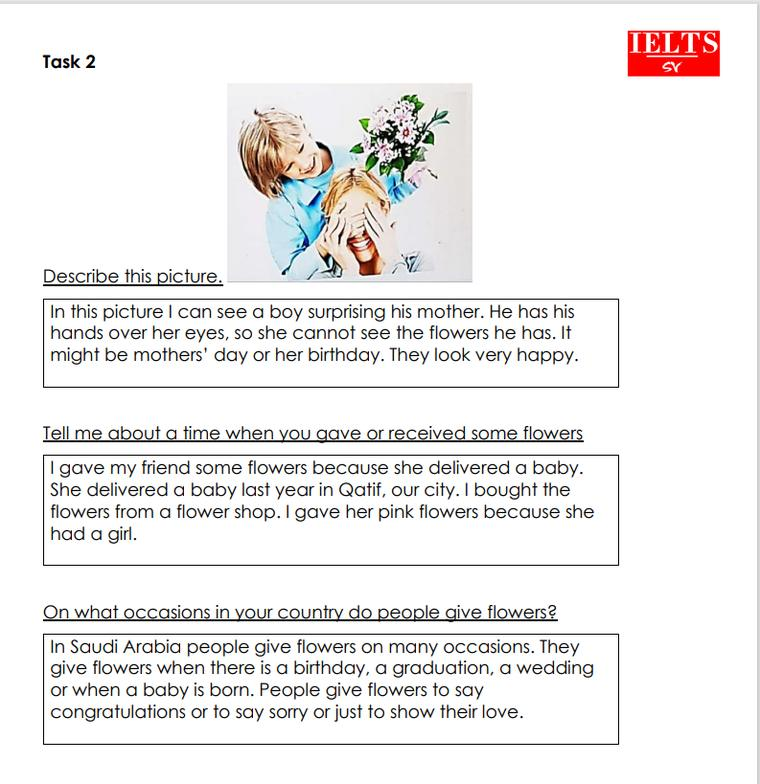
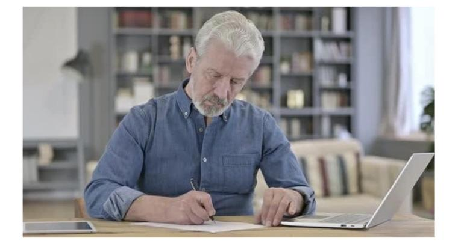
Describe this picture
Have you ever written a hand letter?
Do you plan to write handwritten letters in the future?
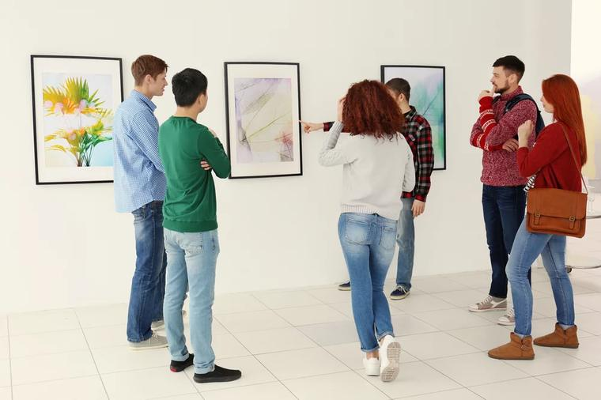
Describe this picture
Looking at the picture, I can see a lot of people. They are wearing different casual clothes. It looks like they were at a museum or an art gallery and the paintings are very beautiful and profound. I can tell that they are looking very attentively at the paintings to evaluate them. I believe that they are on cloud nine and full of energy.
What are the benefits of viewing artworks?
Viewing artworks has numerous benefits. Firstly, it provides aesthetic pleasure, triggering positive emotions and reducing stress. Art fosters creativity by exposing individuals to diverse expressions. Moreover, it cultivates critical thinking, as viewers analyze and interpret meanings. Art appreciation encourages cultural understanding and empathy. In sum, engaging with artworks enhances well-being, sparks creativity, and nurtures a deeper understanding of the world.
Why do people like to go to art exhibitions?
People enjoy attending art exhibitions for various reasons. Firstly, it offers a chance to appreciate diverse artistic expressions, providing aesthetic pleasure. Additionally, art exhibitions create a cultural experience, allowing individuals to connect with different perspectives and ideas. Socially, these events often serve as a platform for people to share and discuss their interpretations. Overall, attending art exhibitions is a fulfilling way to explore creativity, connect with culture, and engage in meaningful conversations.
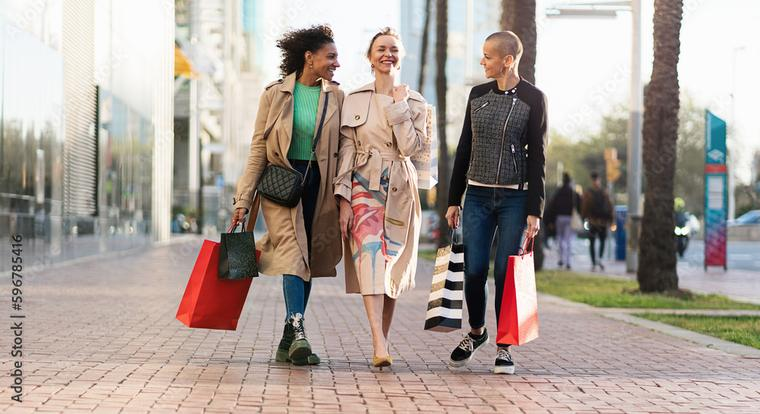
Describe
Tell me the last time you went shopping?
Why do some people dislike busy places?
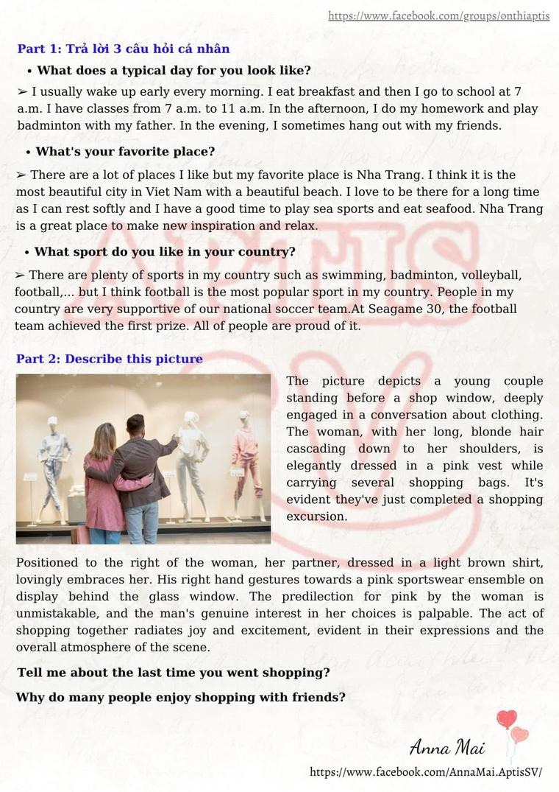
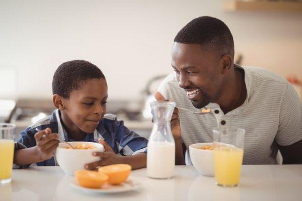
Describe
What do you usually eat for breakfast?
Is it important to eat a good breakfast? Why?
Tả tranh và trả lời 2 câu hỏi liên quan.
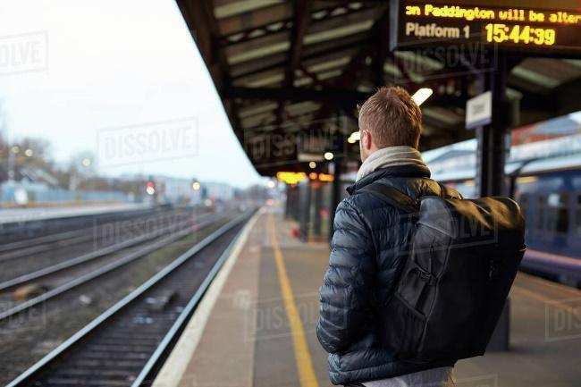
Describe 2 pictures
Both of the pictures depict the means of transport.
In the first picture, I can see that there is a man sitting next to his luggage suitcase. He's wearing a very polite suit, I guess he's a businessman or something like that. To be more specific, he was standing at the airport and watching the plane go up in the sky.
In the second picture, there is a man wearing a denim jacket and a red backpack. He is waiting for the train to arrive. I guess he's about to take the train to his hometown to visit his parents. Looking at the background I can tell that it’s a nice weather
Why do people prefer to go by plane than by train?
From my perspective, each mean of transport has its own advantages, airplanes are not an exception. When compared to the train, the plane is considered to be a faster and more convenient means of travel. Wherever you want to go or need to go suddenly, especially abroad, the plane is a perfect choice as it will take you to the place you want in the fastest and simplest way. Besides, flying is one of the safest ways to travel, you can stay safe in the knowledge that your plane has been checked, double checked, and checked once more before you even step on board.
Why does flying make many people feel uncomfortable?
Some people have gradually become uncomfortable flying, such as me. I know some people think flying is one of the most exciting and magical things, but I personally am not a fan. FMP, maybe there are 4 main reasons that make many people feel uncomfortable when they’re flying. These are: remembering a bad flight, hearing scary stories about flying, taking a flight while feeling nervous, or traveling during a personally stressful phase in their life. Besides, it's extremely bad if your flight is delayed, which happens quite often in the airline industry.
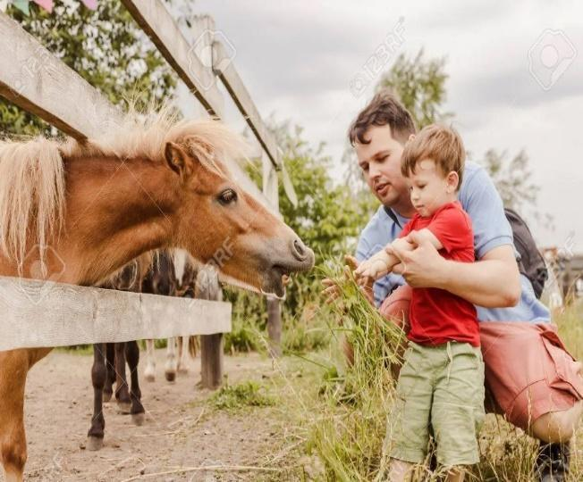
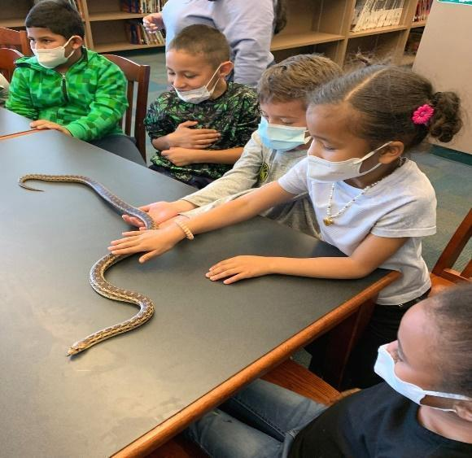
Describe:
|
|
|---|---|
|
|
|
|
Do you like interacting with animals?
Should children be exposed to animals?
From my perspective, I see eye to eye with the exposure of children to animals from a young age. Having a pet has various benefits for children. According to a survey, children who developed the closest attachments or strong bonds to their pets didn't have the rates of anxiety and depression. Furthermore, caring for their furry friends, such as taking them for a walk, feeding them and grooming them teaches the children to be responsible not only towards other animals but also with people.
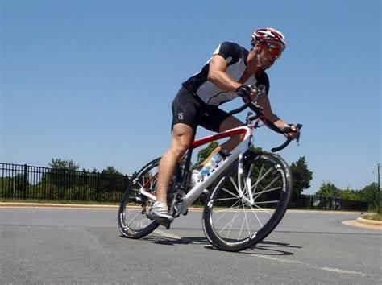
Describe:
Looking at the 2 pictures, there are 2 types of sports including individual sports and team sports. As I can see, the first picture shows a rowing team. It looks like they are facing a strong wave from the river because the athletes are pulling as hard as they can. They are wearing life jackets and the competition seems dangerous. On the other hand, in the second picture, I can see a male athlete in a bike jersey and helmet. It looks like he is taking part in a competitive road cycling which is held on paved roads with a lot of trees around.
What are the difficulties of these 2 sports?
Each sport has its own challenge. As for racing bikes, the first difficulty is that it has a risk of injury. Besides, racing bikes is a sport that requires keeping the pace and understanding how to handle unexpected situations. Regarding the rowing race, I think the hardest part is the co-operation and the ability to tolerate bad weather conditions. Therefore, it is not only physically demanding but mentally exhausting as well.
Why do some people prefer team sports to individual sports?
From my perspective, people who choose to play team sports often receive support from their team members, so it suits best for people who are outgoing, extroverted and sociable. They find themselves most enjoyable while interacting and cooperating with others to achieve the goal. Moreover, team sports teach their players valuable life lessons that they could not learn from individual sports. For example, team sports teach people about leadership which is one of the most important skills nowadays.
4. Tranh 1 người đàn ông đi du lịch đang lấy máy ảnh chụp núi. Anh ta đeo balo du lịch. Phía trước là thung lũng và đồng cỏ hoang sơ + 1 cặp đôi kéo vali trên đường. Phía trước là tòa nhà cổ kính cao trong thành phố.
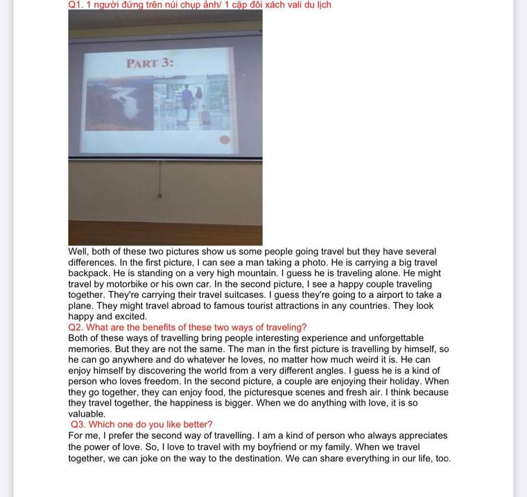
Describe: Both of the photos depict two different ways of traveling. In the first picture, I can see a man wearing …T-shirts, … pants, and a backpack. In front of him are valleys and wild grasslands. I guess he is traveling alone and his journey is wild travel. Meanwhile, in the second picture, there is a young couple walking on the street. The man wears…., while the woman wears….. They are holding suitcases. I guess they are traveling in a city because I can see an ancient building. Maybe they are spending time relaxing on their days off.
What are the benefits of these 2 ways of traveling?
I think people choose these types of traveling according to their hobbies,
demands and situations. Young people who are passionate about exploring
nature and enjoying themselves would prefer to travel alone. Because they will have more time to focus on their own experience rather than on others. On the
contrary, someone who wants to have the opportunity to have fun and create memories with family or friends will choose to travel in groups.
Which one do you like better?
For me, I prefer traveling in groups to going alone for some reasons. First of all, I am not good at determining directions and reading maps, so I get lost frequently. Therefore, I need fellow travelers to help me stay on the right track in the journeys. Moreover, I also love the lively and entertaining atmosphere when there are a lot of people participating. On holiday, I normally have trips with family or a team of friends. We spend time enjoying the moments and making memories.
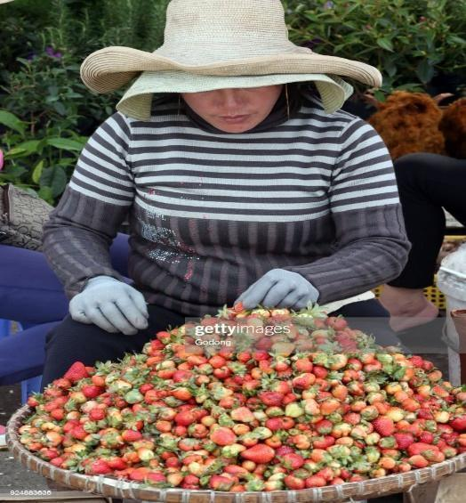
Describe: Both of the 2 pictures depict the ways of shopping nowadays. In the first picture, I can see a family buying some food at the supermarket. There is a father, a mother and their child. They seem to be very happy and comfortable. I guess they are used to shopping at the supermarket. Meanwhile, in the second picture, there is a woman who is selling strawberries. She is wearing ... Looking at the background I can guess that this is a normal market.
Benefits of markets and supermarkets?
From my perspective, both ways of shopping have their advantages. First of all, when you buy food at the market, you can save money because the food at the market is usually cheaper than at the supermarket. Besides, you'll have access to food with fewer, if not, chemical-free foods. About the supermarket, it can maintain a large variety of all the goods and thus, help customers in the selection of best goods. Moreover, at the supermarkets, customers can feel freer, more comfortable because they choose and carry products themselves.
Why do many people not like shopping?
I think there are several reasons that some people hate shopping. Firstly, shopping takes time, some people think it's not worth spending their precious time shopping. Secondly, the fact that shopping encourages us to buy things that we do not need or use cannot be denied. This can lead to debts. And finally, people tend to invest more money in experiences than shopping. That is my opinion about this situation.
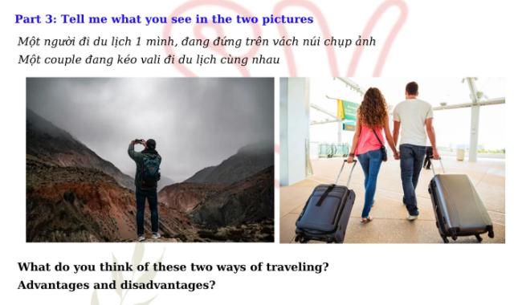
In the first picture, I see a lot of people standing around an old white Bus, underneath there are puddles and a man is standing on top of the bus to take things off. I guess all of them have just finished a long journey and are waiting to get their things down to return home.
Compared to the first picture, the second picture depicts a man in a white shirt and blue jeans. He is opening the door of a red car to get into the car. I think he is about to move somewhere else, maybe work. Through the two pictures, I think the people in the first picture have a poorer life than the man in the second picture.
I think these types of vehicles are suitable for each person's demand and financial situation.
People who have a limited budget and have to travel frequently will prefer public transportation such as bus, coach and train. It costs them a cheap fee and is quite convenient. But sometimes, it is crowded and noisy, which makes people feel uncomfortable. On the contrary, personal vehicles like cars can provide users with comfort, privacy and safety. Furthermore, they can have control over their time to travel.
Many people choose to have their own car because with your own car, you'll enjoy the convenience of being able to travel anywhere you want, any time you want. Part of owning your car is enjoying the convenience but also experiencing your own freedom. And you can also save time in the long run. When you don't have to spend time waiting for a bus, a train, or ride-share system, you can leave work or your home whenever you want.
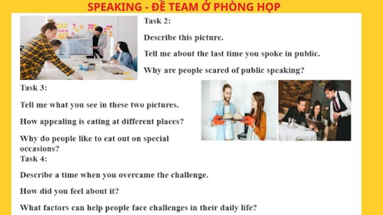
Looking at the 2 pictures, there are couples who are about to eat their meal but in 2 different places. In the first picture, there seems to be a couple cooking a meal with each other. They are holding a tray with freshly baked bread on it. Meanwhile, the second picture shows another couple making an order in a restaurant. They are looking carefully at the menu to look for their desired dishes. The restaurant is very luxurious I think.
Eating at different places is very appealing. We can enjoy eating many different scrumptious and mouth-watering foods in different ways of cooking. Moreover, we can also enjoy the great services instead of having to cook in the kitchen and wash the dishes on our own. Furthermore, eating at different places is very convenient for me and it helps me let my hair down after a hard working day while enjoying a delicious meal.
Tả 2 tranh
Bạn thích viết tay hay đánh máy?
Cái nào tiện hơn?
Tả 2 tranh
Bạn thích hoạt động nào hơn?
Theo bạn, hoạt động ở 2 tranh trên cái nào thu hút giới trẻ hơn?
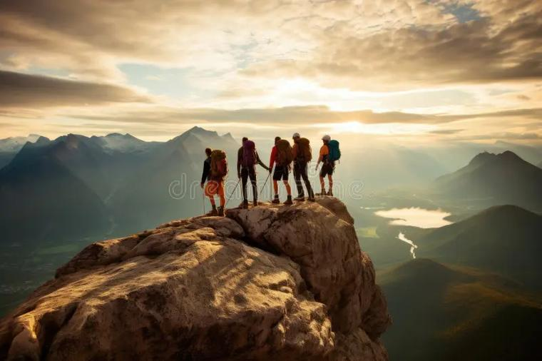
Describe 2 pictures
What is the attraction of those 2 places?
How to protect the natural beauty of those places?
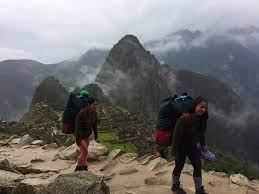
Tả 2 tranh
Sự khác nhau trong 2 cách thể dục này?
Việc tập thể dục thường xuyên quan trọng như thế nào?
Describe
What is your opinion about these 2 jobs?
Which job do you think is more interesting?
In the first picture I can see two men cooking in the kitchen. They are wearing cooking uniforms. Moreover, they are wearing hats. I think they work at the hotel. The food looks delicious. One man is smiling. They look so happy.
In the second picture I also can see two men. I guess they are workers. They are wearing helmets with flashlights in front of them. In my opinion, this work is harder than the work in the first picture
I think in the first picture it's a comfortable place to work. They have no pressure. But they need meticulousness. If they work at a five star hotel, they will get a high salary.
In the second picture, they work so hard. They leave early in the morning and come back when the sun goes down. They would have to focus very carefully. It might be stressful.
I think chefs would be more fun to do. I can cook many delicious dishes. Furthermore, I can not only decorate but also create the dishes. On the weekends or holidays, I will cook for my family. I feel happy and joyful. Cooking dishes makes me reduce stress.
Describe
Which place do you prefer?
Where is suitable for children?
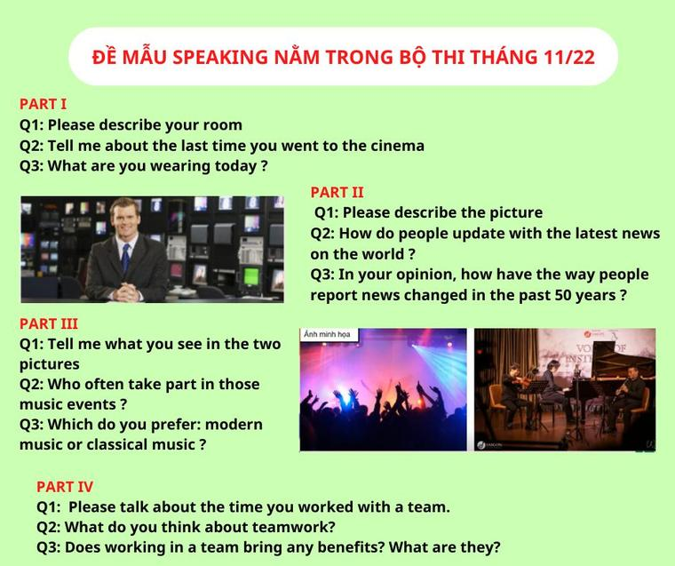
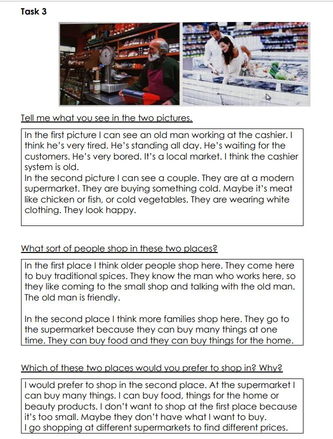
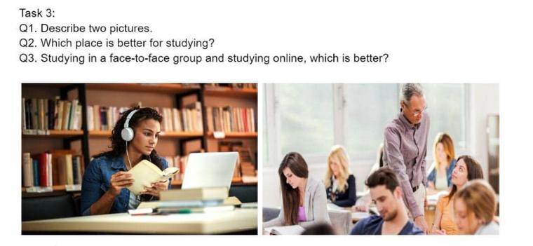
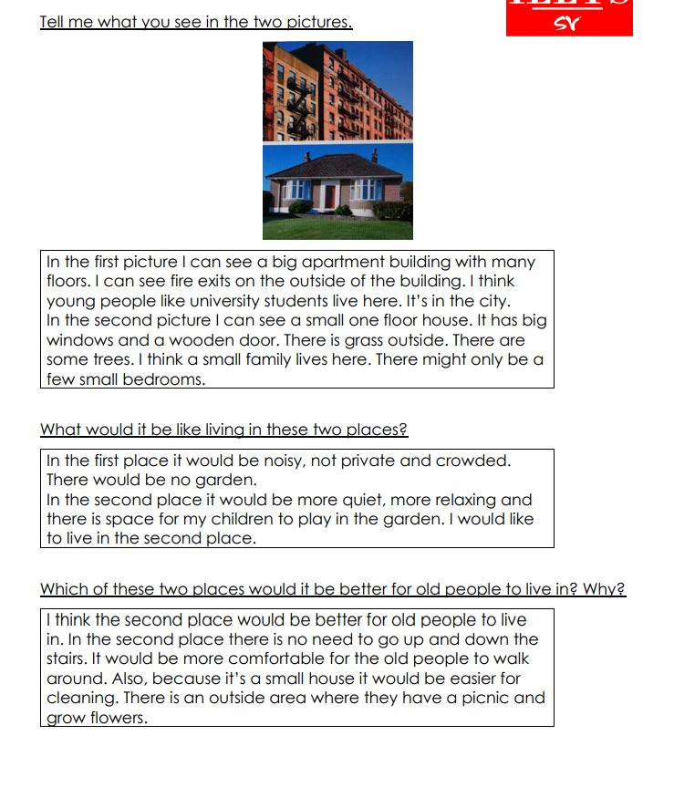
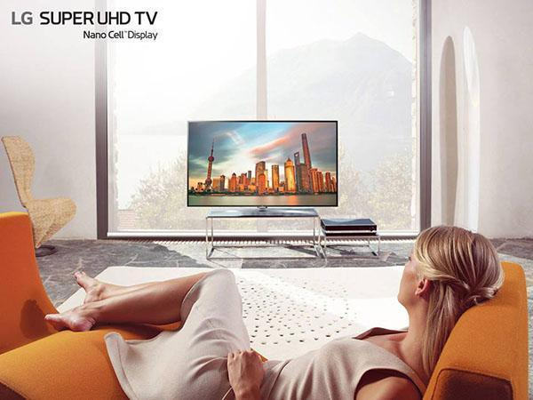
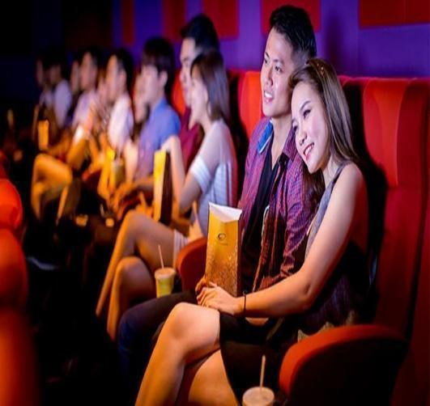
Tả tranh
Bạn thích xem phim ở đâu hơn? Vì sao?
Nên xem phim ở đâu thì tốt hơn?
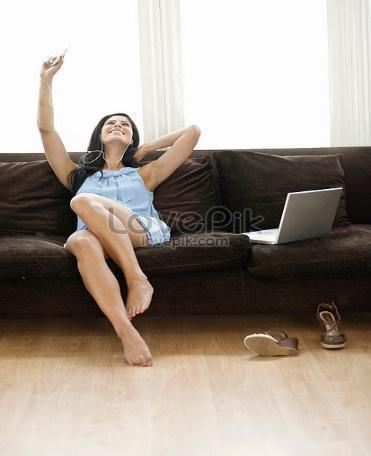
Describe
Well, both of these two pictures show us some people enjoying music but they have several differences. In the first picture, there is a woman lying on a chair and listening to music. I guess she is enjoying her leisure time by listening to his favorite songs. Maybe she is a huge fan of music. Music helps her feel relaxed and comfortable. In the second picture, I see a group of people playing with musical instruments. I guess they're professional musicians and they are preparing for their upcoming concert. Maybe music is their passion and it becomes an important part of their life.
The ways to enjoy music in these 2 pictures?
The ways to enjoy music in these two pictures are so different. In the first picture, the woman is enjoying music herself at home. To enjoy the relaxing time with music, everything she needs just is a smartphone or a music player and headphones. That’s it. She can lie down on the chair whenever she wants and listen to any favorite songs. Awesome. In the second picture, it may be a professional concert that needs preparation well before starting. If you want to go to a music concert, you need to find a suitable one that will perform your favorite type of music and book the ticket early to reserve. It seems a bit more complicated.
Benefits of listening to music
Music is an important part of being human. First, music helps us improve our mood. Music can benefit overall well-being and create happiness in everyday life. Secondly, music reduces stress and anxiety in people's minds. Third, music improves memory and eases pain. I am not a huge fan of music at all but I think people can't live without music. Especially, when I feel disappointed or losing myself, music helps to find me again.
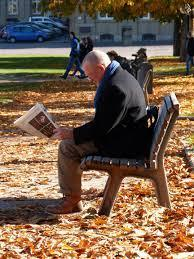
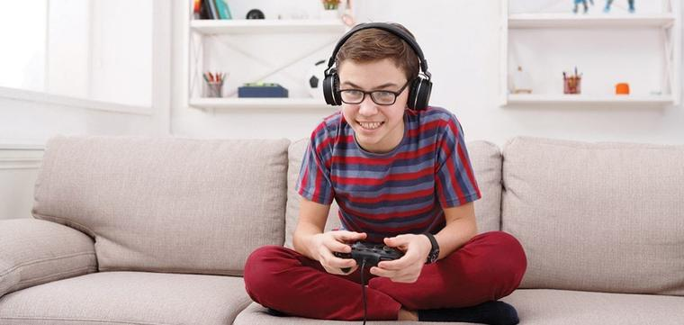
Describe
Do you prefer reading newspapers or playing video games?
What are the benefits of reading?
Tranh 1 người đàn ông đứng ở rừng thông lạnh giá + Người phụ nữ đứng ở sa mạc
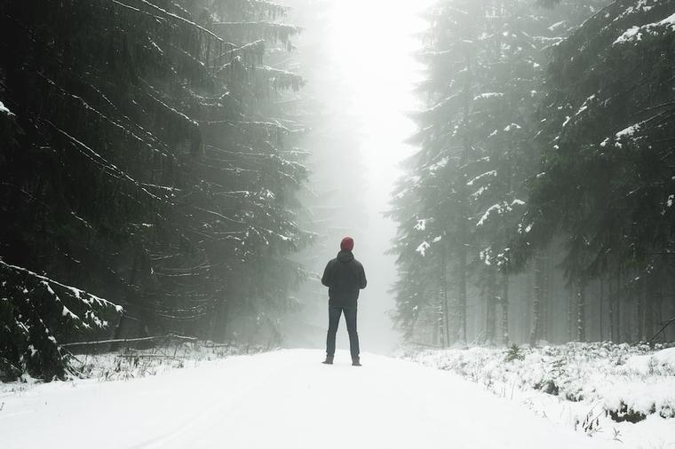
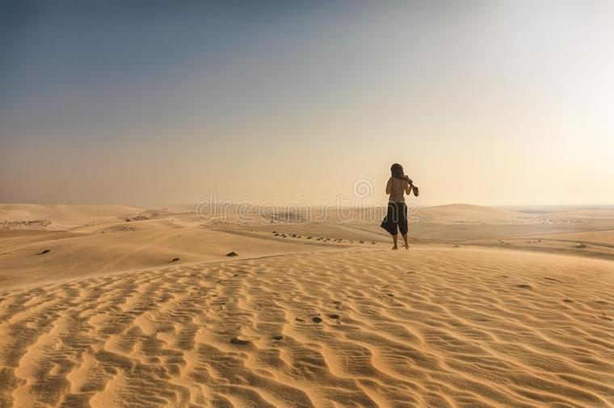
Describe
What types of people live in these two places?
Which place do you prefer?
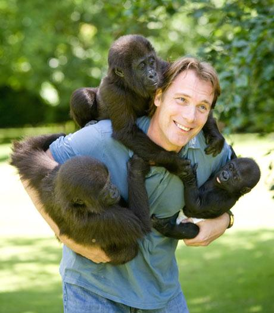
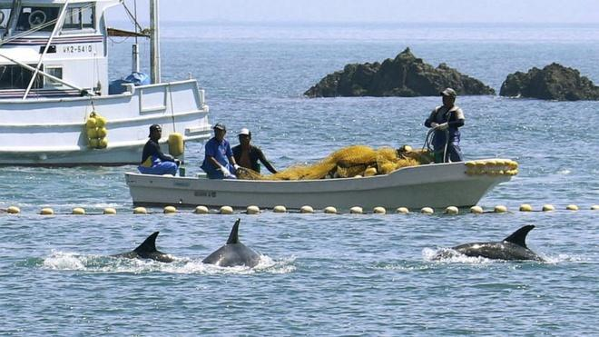
Describe
Do you prefer monkeys or dolphins?
What should we do to protect animals?
Describe
Do you prefer playing chess or playing video games?
Are indoor activities important? Why?
Describe
Looking at these two pictures, I can see two different ways of moving with animals.
Looking at the picture on the left, I can tell that there is a man riding a camel. It seemed like he was in the desert because there was a pyramid behind him and all around was golden sand.
Looking at the picture on the right, I see a man riding a horse-drawn carriage. He wore a very elegant suit. It seems like he's in town.
What are the interesting points of these 2 ways of traveling above?
Riding a horse or camel is interesting because these animals make the journey special. Horses are fast and make the trip exciting, creating a strong bond with the rider. Camels are great for slower, relaxed journeys, letting travelers enjoy the surroundings. Both experiences connect people with animals, adding a unique touch to the trip. Riding horses or camels also lets us feel a connection to history, culture, and nature, making the journey more memorable and meaningful.
Should animals be treated like a means of transportation?
I think animals shouldn't just be used as a way to get around. Even though they can help us travel, we need to be kind to them. Animals have feelings and needs, so it's not fair to treat them only as a transportation tool. Taking care of them means giving them enough rest and not making them work too much. We should be nice to animals and make sure they are treated well while still using them for transportation.
Describe
Do you prefer to eat at home or out?
Why do we have to eat a variety of foods?
Describe
What are the benefits of indoor and outdoor sports?
Do you think that the main purpose of playing a game is to win?
Describe
What are the disadvantages of these two ways of learning?
Nowadays, technology has helped us a lot in finding information, what do you think?
Describe
Looking at these two pictures, I see that there are two different sports.
Looking at the picture on the left, I see there is a soccer team. They are playing soccer on the grass field and it looks like they are playing in a stadium.
In the picture on the right I see a man doing jumps. He's wearing a sporty outfit and he looks very healthy and full of energy. In this picture, I can see the weather is very lovely and brilliant.
What is the difference between these 2 sports activities?
Football and high jump are different sports. Football is a team game with a ball, played by two teams. The goal is to score by getting the ball into the opposing team's goal. In high jump, individuals try to jump over a bar. Football is about teamwork and scoring goals, while high jump is an individual sport where athletes show their ability to jump over a bar. The main difference is that football is a team game, and high jump is an individual event in track and field.
Why are some sports activities more popular than others?
Certain sports are more well-liked because they're easy to try, get a lot of attention in the media, and connect with people culturally. When a sport is simple to start, doesn't need much gear, and is widely covered in the media, it tends to become popular. The cultural importance and traditions associated with a sport also matter. Moreover, sports that are easy to understand and play often attract more people. In summary, a sport's popularity depends on how accessible it is, its media exposure, cultural relevance, and simplicity.
Describe
Where do you like to play music? Why?
How does playing music in different locations bring different feelings?
Describe
What would it be like to eat in 2 places?
Where do you think food is better?
Describe
In these two pictures, I see two completely different places.
In the first picture, I see two people standing in a pine forest. The weather looks very cold. Looking at the background, I see a lot of pine trees around.
In the second picture, I see two people sitting and looking at the sea. They seem to be relaxing and enjoying themselves very much. It seems that the beach is very beautiful and the weather is very lovely and gorgeous.
Which place do you like more? Pine forests or beaches?
I prefer beaches. People love beaches for their calming vibes. The gentle sound of waves, warm sand, and wide sea views create a peaceful atmosphere that helps folks unwind. Beaches offer a break from the usual routine, giving a sense of escape and a chance to connect with nature. Plus, there's the fun factor – swimming or playing beach games adds to the enjoyment. The positive feelings associated with the coastal setting make beaches a top choice for those seeking a relaxing getaway from the daily grind.
Does the weather affect people's emotions? Why?
Yes, weather can impact people's emotions. Sunny days often boost mood and energy levels, triggering positive emotions. On the other hand, gloomy weather can lead to feelings of sadness or lethargy. Natural light affects the production of serotonin, a neurotransmitter linked to mood. Additionally, seasonal changes can influence emotional states, with sunlight exposure playing a role in regulating circadian rhythms. Overall, weather conditions have a significant influence on people's emotional well-being by affecting neurotransmitter levels and daily rhythms.
Describe
Looking at these two pictures, I see two different activities.
In the first picture. I see a group of people climbing a mountain. Looking at the background, there are a lot of clouds and the sky is very beautiful. They seem to be professional climbers.
In the second picture, I see a family at the beach looking very happy and full of energy. I can see that the weather was very beautiful and brilliant.
Which of the 2 places do you like to go? Why?
I find the mountains more appealing. The serene landscapes and fresh mountain air create a peaceful ambiance that resonates with me. I appreciate the opportunity to hike and explore nature trails, immersing myself in the tranquility of the surroundings. While beaches are lovely, I'm drawn to the rugged beauty and sense of solitude that mountains offer. The idea of cozy mountain retreats and breathtaking views adds to the allure. Overall, the mountains provide a retreat where I can disconnect and recharge amidst the beauty of nature.
Who is suitable for each activity? Why?
It really depends on personal preferences and interests. Beaches are great for those who enjoy sunbathing, water activities, and a more laid-back atmosphere. People who love the sound of waves, sandy shores, and a tropical vibe would likely prefer beaches. On the other hand, mountains cater to individuals who appreciate hiking, nature walks, and a cooler climate. Those seeking adventure, stunning landscapes, and a quieter retreat might find mountains more suitable.
Describe
Which place would you rather live: the city or the countryside?
Who is suitable for each place? Why?
Describe
What are the advantages of traveling by car and traveling by train?
Why do some people like traveling by train?
Describe
Looking at these two pictures, I see two different places to travel.
looking at the first picture, I see a lot of people at the beach and there are a lot of umbrellas with many colors. It seems to be a very beautiful beach with blue water and white sand. I believe the weather is lovely and gorgeous.
Looking at the second picture, I see two girls sitting next to a river. I guess these two girls are sitting and watching the mountains and forests to relax. This picture is very peaceful.
Do you like going to crowded beaches?
No, I don't like going to crowded beaches. First, they are often noisy. There is a lot of noise from people talking, laughing, and playing music. This can be very distracting and make it difficult to relax. Second, crowded beaches are often dirty. There is a lot of trash and litter on the sand and in the water. This can be unsightly and even dangerous. Third, crowded beaches can be uncomfortable. It can be difficult to find a place to sit or lay down, and the sand can be hot and uncomfortable.
Why do many people like quiet places?
People like quiet places because they offer a calm and focused environment. Silence helps with concentration and minimizes distractions, making it easier to study, read, or think deeply. A quiet setting also promotes relaxation and reduces stress. When it's quiet, people can concentrate better on their tasks, which improves productivity. The preference for quiet places is often based on the desire for a peaceful and comfortable atmosphere that supports various activities without interruptions.
Describe
In these two pictures, I see two different places to study.
Looking at the first picture, I see 3 friends, they are wearing different casual clothes. I see that they are studying very hard. Looking at the background, I believe this is a library with a lot of books.
Looking at the second picture, I see a man reading a coffee shop book. He is wearing a striped shirt. I saw that he was sitting next to the window of the cafe. Outside, the weather is very nice.
Do you prefer studying in the library or coffee shop? Why?
I prefer studying in the library. Libraries are quiet and free, which helps me to focus on my work. They also have a variety of resources, such as books, articles, and computers, which can be helpful for research. However, I sometimes study in coffee shops. Coffee shops can be a social and welcoming environment. They also have free Wi-Fi, which can be helpful if I need to access online resources. In the end, the best place to study depends on my individual needs and preferences. If I need to focus on my work, I will study in the library. If I want to be more social, I will study in a coffee shop.
What are the difficulties of studying at the library and at coffee shops?
Studying at a library can sometimes be challenging due to the rigid, quiet atmosphere, which may feel restrictive for some. On the other hand, coffee shops might pose difficulties with noise distractions and limited space. Libraries may lack the comfortable amenities that coffee shops provide, like refreshments. However, coffee shops may have inconsistent Wi-Fi or too much ambient noise. The choice depends on personal preferences, balancing the need for a quiet, focused environment with the desire for a more relaxed and comfortable setting.
Describe
Do you prefer living with family or living alone?
Nowadays, why do many people like to live alone?
Describe 2 pictures
What are the benefits of growing a garden?
What is the appeal of growing vegetables or flowers?
Describe 2 pictures
The importance of reading news?
Do you like to preserve memories by taking photos or writing them down?
A time you worked with each other.
How did you feel about that?
What makes a good team?
A time you had a successful challenge.
How did you feel about that?
What can help people face challenges in daily life?
- Tell me about your busiest time.
- How did you feel about it?
- Is it right that the less you work, the better your life is?
A time you worked hard to achieve your goal.
How did you feel when you achieved your goal?
How should people be encouraged to achieve their goals?
Kể 1 lần thăm thành phố?
Môi trường ở đó như thế nào?
Làm gì để bớt ô nhiễm?
Tell me about a time you met a new friend
How did you feel?
The benefit of making new friends?
Tell me about the last time you received good news.
How did you feel?
Why do people want to celebrate good news?
A time you learnt something new?
- What was the most difficult thing you had to face?
- Why do people love learning new things?
A time when you were helped by someone.
How did you feel?
Do you think there are many rules in modern life?
A time when someone told you to stop doing something.
How did you feel?
Do you think there are many rules in modern life?
A time when you got lost
How did you feel?
What do people usually do when they get lost ?
A time when you visited an old building.
How did you feel?
Why do people like visiting new places?
A time when you broke the law.
What did you do?
Why should people follow the law ?
A time when you joined a music festival.
How did you feel?
What are the benefits of this event ?
A time when you watched a sports event.
How did you feel?
What are the benefits of joining a sports event ?
A time when you join an activity for children.
How did you feel?
What are the benefits of these activities ?
Tell me about your favorite piece of clothing
How do you feel when you wear it?
Why do people dress in such different ways?
Tell me about your sleeping habits.
How do you feel when you don’t have enough sleep?
Is getting the right amount of sleep important? Why? Why not?
Tell me about the music that comes from your country
How do you feel when you hear or listen to music?
Why do some cultures produce so much music and others so little?
A time that you started a course
Why is it interesting?
When do people start a course?
Tell me about a time you were in a hurry
How do you feel?
Nowadays people are more and more in a hurry? What do you think?
- What do you use the internet for?
I use the internet for various purposes. It's a valuable resource for research, helping me find information for work or school projects. I also use it to stay connected with friends and family through social media and email. Entertainment is another aspect, as I stream movies, watch videos, and play online games. Additionally, I shop online for a wide range of products and services. Overall, the internet serves as an indispensable tool for information, communication, and leisure.
- How do you feel when you use it?
When I use the internet, I feel a mix of emotions depending on the activity. If I'm working or studying, I often feel focused and determined to find the information I need. On social media, I can feel entertained and connected to others. While streaming or playing games, I experience excitement and enjoyment. Shopping online might make me feel satisfied or sometimes even a bit guilty if I spend too much. In general, the internet enhances my emotions based on the specific task or interaction.
- Many people say that the internet has a bad impact on people. What do you think?
I think the impact of the internet on people varies and depends on how it's used. While the internet provides numerous benefits like easy access to information, communication, and entertainment, it can also have negative effects when overused or misused. Excessive screen time can lead to health issues, and online harassment and addiction are growing concerns. Therefore, it's essential to use the internet mindfully and strike a balance to harness its benefits while mitigating its negative impact.